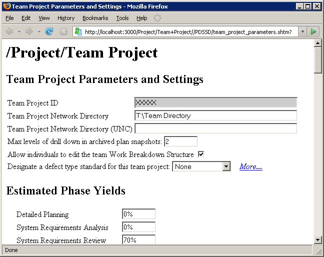

Because of the way the dashboard currently handles team quality data, it is necessary to create individual team member plans before you can view the team quality plan. This means that you should most likely alter the launch schedule, folding launch meeting No. 6 back into launch meeting No.4.
Once you have successfully validated the bottom-up team plan, you may proceed with the steps below.
Team quality metrics are calculated using team project quality parameters. These parameters can be edited on the Team Project Parameters and Settings page, which can be opened by clicking the appropriate item on the main Team Dashboard window.

This page includes:
Follow the guidance provided in the TSP process to create these estimates.
Using the quality parameters entered on the page above, and data from your team's project plan, the dashboard will calculate a quality plan for your project and include it as part of the overall project plan. To view this quality plan, switch to the Team Dashboard window, select the team project from the tree on the left, and click the Rollup Plan Summary option in the list on the right. The rollup plan summary will appear in your web browser.
The process mentor for your organization may have populated your project summary with charts, forms, and reports that you can use to view the planned quality metrics. (See the Creating / Customizing Process Forms and Reports help topic for more information.)
You can drill down and see the quality plans for various project
subcomponents by clicking on the ( ) icon.
) icon.
If the calculated quality metrics do not meet your team's quality goals, you may edit the project quality parameters described above, in keeping with the guidance in the TSP process. To simplify this task, open two browser windows: one containing the project parameters page, and the other containing the calculated quality plan. As you edit the quality parameters, calculated values (displayed as numbers in grey boxes) will recalculate automatically. To update views of graphical charts, you will need to refresh the page manually.